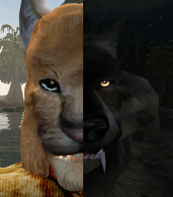

Volk_Milit
(aka Ja'Virr-Dar)
Khajiit, gamer, programmer, geek.
tes3mp member. Check it out by link upside.
Create this page just for fan, actually.
If you want to contact me, better write to
steam or to javirrdar at gmail dot com.
tes3mp member. Check it out by link upside.
Create this page just for fan, actually.
If you want to contact me, better write to
steam or to javirrdar at gmail dot com.

Miletus (/maɪˈliːtəs/; Ancient Greek: Μί̄λητος Mīlētos; Hittite transcription Millawanda or Milawata (exonyms); Latin: Miletus; Turkish: Milet) was an ancient Greek city on the western coast of Anatolia, near the mouth of the Maeander River in ancient Caria. [wiki]
Just to point that my nickname is distorted Miletus and Wolf transliteration to Russian language.
Also Ja'Virr-Dar is there was no accident:
Ja - Bachelor, young adult
Virr - Just second name means nothing, like Ra'Virr. Actually I just stole that Virr from him ;)
Dar - Thief, clever
[uesp.net]
Just to point that my nickname is distorted Miletus and Wolf transliteration to Russian language.
Also Ja'Virr-Dar is there was no accident:
Ja - Bachelor, young adult
Virr - Just second name means nothing, like Ra'Virr. Actually I just stole that Virr from him ;)
Dar - Thief, clever
[uesp.net]